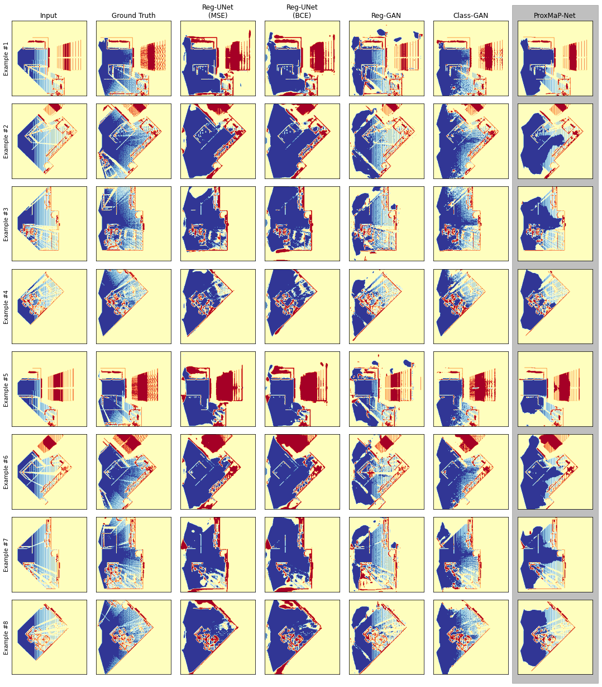
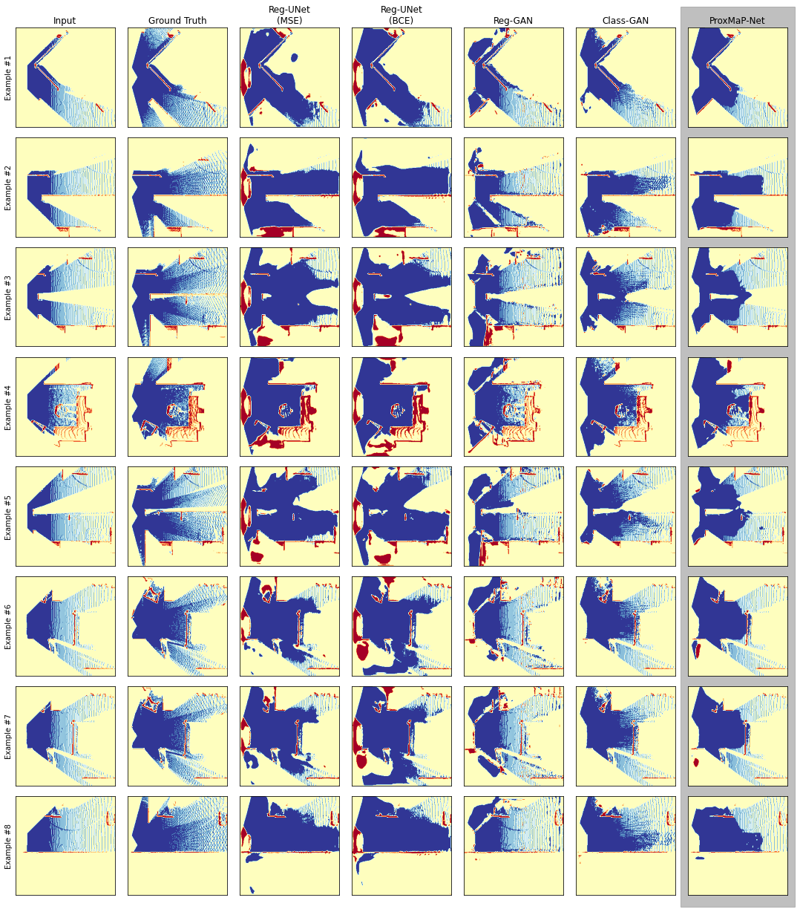

In a typical path planning pipeline for a ground robot, we build a map (e.g., an occupancy grid) of the environment as the robot moves around. While navigating indoors, a ground robot's knowledge about the environment may be limited due to occlusions. Therefore, the map will have many as-yet-unknown regions that may need to be avoided by a conservative planner. Instead, if a robot is able to correctly predict what its surroundings and occluded regions look like, the robot may be more efficient in navigation. In this work, we focus on predicting occupancy within the reachable distance of the robot to enable faster navigation and present a self-supervised proximity occupancy map prediction network (named, ProxMaP-Net). We show that ProxMap-Net generalizes well across photo-realistic inputs and improves the robot navigation efficiency in simulation by $12.40\%$ against the traditional navigation method.
Here we show results from ProxMaP-Net and its variations on living room data obtained from AI2THOR simulator. Abbreviations Reg and Class refer to Regression and Classification tasks, respectively. ProxMaP-Net is a classification model.
Below we show results from ProxMaP-Net and its variations on living room data obtained from Habitat-Matterport3D (HM3D) simulator. Abbreviations Reg and Class refer to Regression and Classification tasks, respectively. ProxMaP-Net is a classification model.
